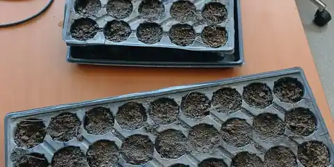

Fechas de helada para Bridgeport Sikorsky Mem Airport, Connecticut
En la mitad de los años, la última helada de primavera llega a más tardar el 5 de abril, pero 1 año de cada 10 todavía hiela después del 17 de abril.
El trazo verde son unos 216 días sin heladas, en la mitad de los años.
Del registro propio de la NOAA en Bridgeport Sikorsky Mem Airport, 1991–2020 · Bien establecido
Cómo leer esto
- El trazo verde es la temporada sin heladas.
- La línea con marcas es cuando es probable que hiele: más marcas, más probable.
- Se lee en el sentido de las agujas del reloj desde enero, abajo, con el pleno verano arriba.
En realidad, una fecha de helada es un percentil sacado de 30 años de registros en una estación meteorológica cercana
en más o menos la mitad de los años todavía llega una helada después de la fecha mediana. Los dos números están abajo, para que elijas tú cuánto riesgo tomar.
Las probabilidades
Última helada de primavera
Con qué frecuencia todavía hiela en cada fecha o después.
- 1 año de cada 10
- 17 de abril
- 1 año de cada 5
- 13 de abril
- 3 años de cada 10
- 9 de abril
- 2 años de cada 5
- 7 de abril
- La mitad de los años (la mediana)
- 5 de abril
Primera helada de otoño
Con qué frecuencia la primera helada llega en cada fecha o antes.
- 1 año de cada 10
- 25 de octubre
- 1 año de cada 5
- 30 de octubre
- 3 años de cada 10
- 1 de noviembre
- 2 años de cada 5
- 4 de noviembre
- La mitad de los años (la mediana)
- 6 de noviembre
- Temporada de cultivo
- unos 216 días
- Zonas de rusticidad cercanas
- 6b, 7a
- Días de verano
- una máxima habitual de unos 27 °C81 °F
- La lechuga y la espinaca se espigan
- de junio a septiembre, con calor y días largos (cómo lo sabemos)
Del registro propio de la NOAA en Bridgeport Sikorsky Mem Airport, 1991–2020 · Bien establecido
Normales climáticas de la NOAA NCEI de 1991–2020, estación Bridgeport Sikorsky Mem Airport (registrada por la NOAA como Bridgeport Sikorsky Mem Ap, USW00094702), en 41.16, -73.13. Son los registros propios de esa estación, sin ajustes. Cuanto más lejos esté tu huerto de ella, con menos exactitud describen tu terreno. El planificador busca la estación más cercana a tu huerto y baja su confianza con la distancia, así que ningún número se presenta como si se hubiera medido en tu huerto.
Además, el aire frío se acumula en las zonas bajas en las noches despejadas y en calma en que hiela, así que una hondonada puede helarse mientras una ladera a unos cientos de pies no. Ninguna tabla puede saber eso de tu huerto. Las heladas que registres durante unas cuantas temporadas, sí.
Verano y lluvia
Un huerto en crecimiento necesita cerca de 25 mm1 pulg. de agua por semana, contando juntos la lluvia y el riego
Esto es lo que trae un mes normal.
Mes a mes
La máxima y la mínima habituales de cada mes en Bridgeport Sikorsky Mem Airport, Connecticut
La máxima y la mínima habituales de cada mes, de 29 °C83 °F a -4 °C24 °F
- enero
- máx. ~4 °C38 °F · mín. ~-4 °C24 °F · lluvia ~81 mm3.2 pulg.
- febrero
- máx. ~5 °C40 °F · mín. ~-4 °C26 °F · lluvia ~79 mm3.1 pulg.
- marzo
- máx. ~9 °C47 °F · mín. ~0 °C32 °F · lluvia ~104 mm4.1 pulg.
- abril
- máx. ~15 °C58 °F · mín. ~5 °C42 °F · lluvia ~106 mm4.2 pulg.
- mayo
- máx. ~20 °C68 °F · mín. ~11 °C52 °F · lluvia ~91 mm3.6 pulg.
- junio
- máx. ~25 °C78 °F · mín. ~16 °C62 °F · lluvia ~96 mm3.8 pulg.
- julio
- máx. ~29 °C83 °F · mín. ~20 °C68 °F · lluvia ~84 mm3.3 pulg.
- agosto
- máx. ~28 °C82 °F · mín. ~19 °C67 °F · lluvia ~101 mm4 pulg.
- septiembre
- máx. ~24 °C75 °F · mín. ~15 °C60 °F · lluvia ~101 mm4 pulg.
- octubre
- máx. ~18 °C64 °F · mín. ~9 °C48 °F · lluvia ~98 mm3.8 pulg.
- noviembre
- máx. ~12 °C54 °F · mín. ~4 °C38 °F · lluvia ~79 mm3.1 pulg.
- diciembre
- máx. ~7 °C44 °F · mín. ~-1 °C30 °F · lluvia ~101 mm4 pulg.
Qué hacer con estas fechas
 Cómo leer un calendario de siembraY recuerda que la fecha misma es una probabilidad
Cómo leer un calendario de siembraY recuerda que la fecha misma es una probabilidad
Cómo empezar semillas bajo techoLa fecha del trasplante sigue dependiendo de la helada Cómo trasplantar plántulasPrimero, aclimátala
Cómo trasplantar plántulasPrimero, aclimátala Cultivos de cobertura y abono verde para el huerto de casaCómo meter uno en un huerto pequeño
Cultivos de cobertura y abono verde para el huerto de casaCómo meter uno en un huerto pequeño
Créditos de las fotos
Cómo leer un calendario de siembra. Foto: Oliver Dixon · CC BY-SA 2.0, vía Wikimedia Commons.
Cómo empezar semillas bajo techo. Foto: Furkan Akkurt · CC BY-SA 4.0, vía Wikimedia Commons.
Cómo trasplantar plántulas. Foto: USDAgov · Dominio público, vía Wikimedia Commons.
Cultivos de cobertura y abono verde para el huerto de casa. Foto: Jonathan Billinger · CC BY-SA 2.0, vía Wikimedia Commons.


.jpg){kind=link}

Códigos postales más cercanos a esta estación
06460, 06461, 06604, 06605, 06606, 06607, 06608, 06610, 06612, 06614, 06615, 06824…
+2 másMostrar menos
06825, 06890.
Estaciones cercanas
Las estaciones más cercanas y cómo se comparan sus fechas de última helada
Juntas muestran cómo varían las heladas en tu zona.
- New Haven Tweed Airport, CTúltima helada a más tardar el 17 de abril
- Islip Li Macarthur Airport, NYúltima helada a más tardar el 10 de abril
- Shirley Brookhaven Airport, NYúltima helada a más tardar el 18 de abril
- Meriden Markham Municipal Airport, CTúltima helada a más tardar el 26 de abril
- Yorktown Heights 1 W, NYúltima helada a más tardar el 25 de abril
- Dobbs Ferry-Ardsley, NYúltima helada a más tardar el 20 de abril
Otras estaciones en Connecticut.
- Hartford Brainard Field, CTúltima helada a más tardar el 17 de abril
- Bakersville, CTúltima helada a más tardar el 8 de mayo
- Storrs, CTúltima helada a más tardar el 19 de abril
¿Cuándo siembro? · De dónde vienen las fechas
Más formas en que Milpa te ayuda
¿Cuándo siembro? · ¿Qué plantas crecen bien juntas? · ¿Qué puedo sembrar ahora? · ¿Algo anda mal en el huerto? · ¿Te dieron un consejo?
Con una cuenta gratis: Planifica tu huerto · Llevar un diario del huerto
Todas las ubicaciones · Todas las plantas · Creencias populares, revisadas